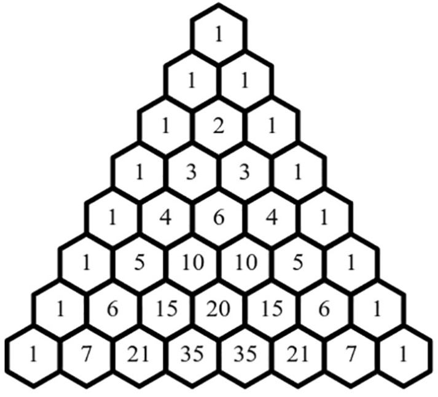
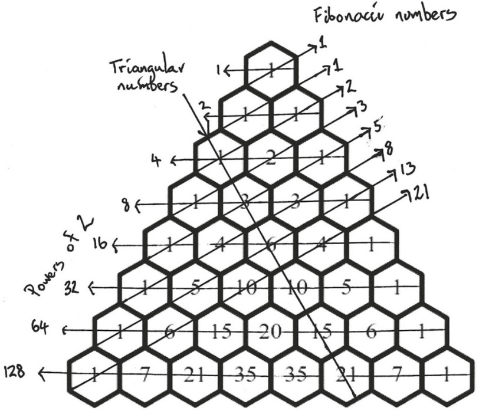
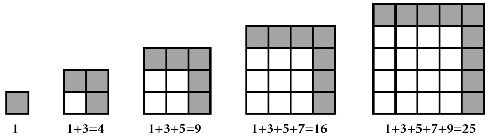
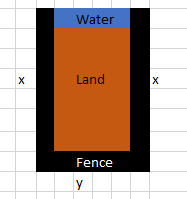
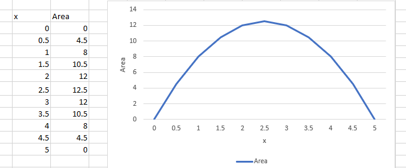
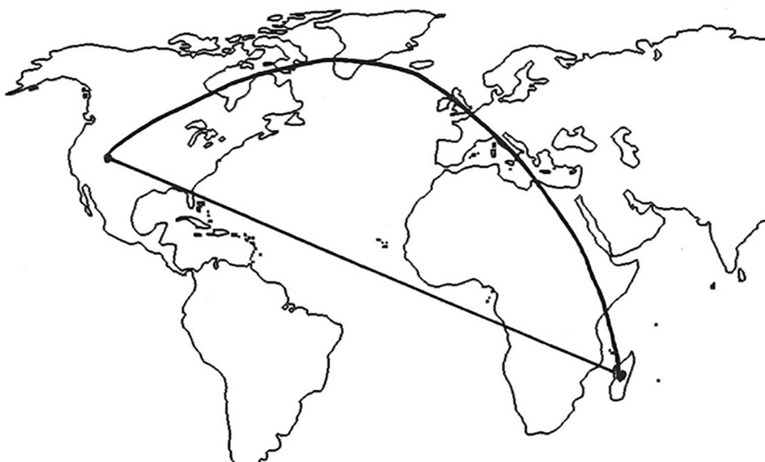
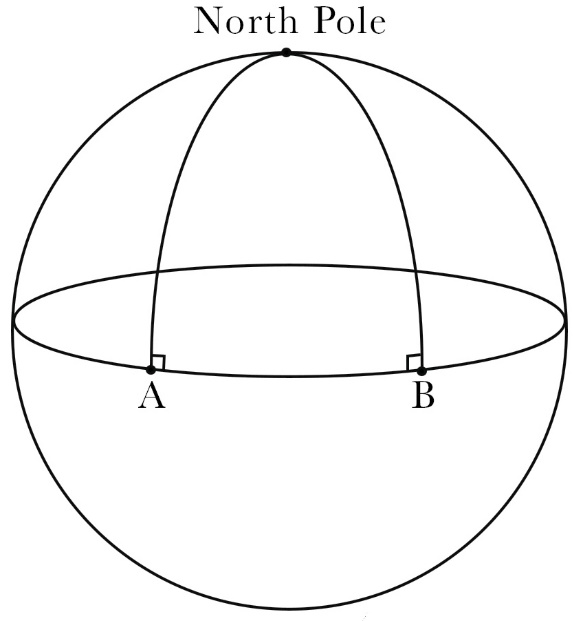

Adding up sequential numbers (Gauss)
Puzzle: You have a flight of stairs in your house with 10 steps. You can take one or two steps at a time. For example, you could do 10 one-steps to get to the top, or 5 two-steps, or combinations of one-steps or two-steps. How many different possible combinations are there to get to the top?
You could do this the long way and try to find all the combinations, running up and down the stairs. But how would our young Gauss do it?
A powerful strategy is to consider a smaller number of steps and see if there is a pattern in the way the numbers are falling out.
Here are the possibilities for staircases with 1, 2, 3, 4, and 5 steps, which can be worked out quickly by hand:
| # Steps | Possibilities | # Possibilities |
|---|---|---|
| 1 | 1 | 1 |
| 2 | 11, 2 | 2 |
| 3 | 111, 12, 21 | 3 |
| 4 | 1111, 112, 121, 211, 22 | 5 |
| 5 | 11111, 1112, 1121, 1211, 2111,122, 212, 221 | 8 |
Fibonacci discovered that Nature was using a simple algorithm in order to grow things. The rule of adding the two previous numbers together was Nature's shortcut for building complex structures like a shell or pine cone or flower. Each organism just uses the two last things it built as ingredients for the next move.
Formula = 1/2 × n × (n + 1); n= 100 = 50 * 101 = 5050
-
Put numbers in sequence
-
Add them up pairwise one from the end one from the beginning (1 + 100)
-
There are n/2 of such pairs
The result of the formula is a triangular number:
 
The triangle has a rule similar to the Fibonacci rule, but you build the numbers in the layers below by adding the two numbers that sit above that number. The table is easy to build using this rule.
If I want to know the number of ways of choosing 3 toppings from a choice of 7 different toppings, then I go to the (3 + 1)th number in the (7 + 1)th row: 35. That is my shortcut to knowing that there are 35 different pizzas I can make. In general, to choose m things from n things you go to the (m + 1)th number in the (n + 1)th row.
Calculate exponential growth
the king of India agreed to pay the creator of the game of chess the price he demanded for his game. The inventor had asked for a single grain of rice to be placed on the first square of the chessboard and then to double the number of grains of rice on each subsequent square on the board.
| Field # | Grains (2 ^(Field # -1) |
Cumulative Sum |
|---|---|---|
| 1 | 1 | 1 |
| 2 | 2 | 3 |
| … | … | … |
| 62 | 2.30584E+18 | 4.61169E+18 |
| 63 | 4.61169E+18 | 9.22337E+18 |
| 64 | 9.22337E+18 | 1.84467E+19 |
-
x = (1 + 2 + 4 + 8 + 16 +...+ 2^62^ + 2^63^) | *2
-
2x = 2 * (1 + 2 + 4 + 8 + 16 +...+ 2^62^ + 2^63^)
-
2x = 2 + 4 + 8 + 16 + 32 +...+ 2^63^ + 2^64^ |-x
-
2x − x = (2 + 4 + 8 + 16 + 32 +...+ 2^63^ + 2^64^) − (1 + 2 + 4 + 8 + 16 +...+ 2^62^ + 2^63^)
-
2x − x = x = [2^64^ − 1]{.mark}
Economies of scale
The mathematics reveals that the growth of each resource in a city can be understood by a single magic number particular to that resource. Each time the population of a city doubles, the socioeconomic factors scale not simply by doubling but by doubling and a bit more. Rather remarkably, for many resources that bit more is around 15 percent. [For example, if you compare a city with a population of 1 million people to a city of 2 million, then instead of the larger city having twice as many restaurants, concert halls, libraries, and schools, you find an extra 15 percent on top of what you'd expect from simply doubling the numbers]{.mark}. Even salaries are affected by this scaling. Infrastructure too is affected by this scaling, but in the opposite direction. Instead of needing twice as much stuff when you double the size of a city, you find instead that you save on infrastructure.
Puzzles
Puzzle: You are a grocer and want to be able to measure all weights from 1 kg to 40 kg using a set of balance scales. What is the smallest number of weights you need to be able to do this, and what are their values?
The trick is to think not in binary but in ternary, or powers of 3. The scales allow three settings: a weight on the right (+1), a weight on the left (−1), or no weight (0). By thinking in ternary, it is possible to show that the grocer only needs four weights that are powers of 3---1 kg, 3 kg, 9 kg, and 27 kg---to measure every possible weight between 1 and 40 kg.
For example, to measure a sack weighing 16 kg, you need to put the sack in one pan along with the 3 kg and 9 kg weights. This will be exactly balanced by putting the 1 kg and 27 kg weights in the other pan. Instead of using 0, 1, and 2 to represent numbers, you are actually using the symbols −1, 0, and 1
Puzzle: You are invited onto a game show. There are twenty-one boxes, and inside each box is a cash prize. You are allowed to open one box at a time. You can keep the money in the last box you opened. But once a new box is opened you can't go back and claim the previous box's money. The trouble is, you have no idea what the size of the prizes might be. There could be a box with a million dollars in it. Or they could all just contain prizes of less than a dollar. Your challenge is: How many boxes should you open to give yourself the best chance of getting the biggest prize that is in all the boxes?
e also turns out to be the shortcut to get the best chance of choosing the winning box in our hypothetical game show. The mathematics proves that if you have N boxes, then you need to gather data from N /e of the boxes to get some idea of what the prize money looks like. We know that 1/e = 0.37... This represents 37 percent of the boxes. Once you have opened 37 percent of the boxes, the strategy is to choose the next box that beats all the boxes that you have opened already. This doesn't guarantee you the best prize, but 1 in 3 times you will end up with the maximum amount possible. If you based your decision on seeing fewer or more boxes, then these chances decrease---37 percent is the optimal amount of data to gather before taking the plunge, whether it's boxes in a game show, apartments, restaurants, or even your partner for life. (Though perhaps it's best not to let your partner know you were so calculating when it came to love.)
Distance travelled
-
Total distance traveled after 1 second = 1 unit
-
Total distance traveled after 2 seconds = 1 + 3 units = 4 units
-
Total distance traveled after 3 seconds = 1 + 3 + 5 units = 9 units
-
Total distance traveled after 4 seconds = 1 + 3 + 5 + 7 units = 16 units
Have you spotted the pattern? The total distance is always a square number. But why do odd numbers have anything to do with square numbers? We cans find out how by turning numbers into geometry.
Distance travelled = t^2^

To grow bigger and bigger squares, I've got to wrap the next odd number in the sequence around the previous square. Suddenly the connection between squares and odd numbers is obvious.
5t^2^ = distance travelled on earth in free fall
Let's pick up the apple and throw it directly into the air. I'm going to launch it from my hand at a speed of 25 m/s.
25t − 5t^2^
I can use this formula to calculate the time it takes to reach my hand again. I need to know when the height above my hand, 25t − 5t^2^, becomes 0 again. Put t = 5 into the equation and I get zero. So the total time for the apple to travel up and back down is 5 seconds.
But what Newton wanted to be able to understand is how fast the apple is traveling at each point during its trajectory. The trouble is that this speed is constantly changing as the apple slows down and then speeds up again.
Let's try to calculate the speed after 3 seconds. Speed is distance traveled divided by the time it takes to travel that distance. The distance that the apple travels from 3 to 4 seconds is
[25 × 4 − 5 × 4^2^] − [25 × 3 − 5 × 3^2^] = 20 − 30 = −10 meters
The minus sign indicates that it's traveling in the opposite direction to the one I threw it in. It's already heading down. So the average speed over this period is 10 m/s. But that's just the average speed over this one-second interval. It's not the actual speed of the apple at 3 seconds. What if I try to take a smaller time interval? If I keep making the time interval smaller and smaller, what I find is that the speed gets closer and closer to 5 m/s. The instantaneous speed is captured when the time interval becomes zero. This is the snapshot Newton was after. Newton's analysis produced a way to make sense of why the instantaneous speed at 3 seconds should be 5 m/s.
Maximize
A king has promised his trusty advisor a piece of land by the sea for his good services. The king has given the advisor 10 km of fencing to mark out a rectangular plot of land bordered by the sea. The advisor obviously wants to maximize the area of the land. How should he arrange the fences?
The variable that is subject to change is x.

| circumference | y+2x=10 |
|---|---|
| beach length | y=10-2x |
| area to maximize | x*(10-2x) |
| area to maximize | 10x-2x^2^ |

Geodesics

The fastest route from Madagascar to Las Vegas is via the United Kingdom

On a sphere angles in triangles add up to more than 180 degrees